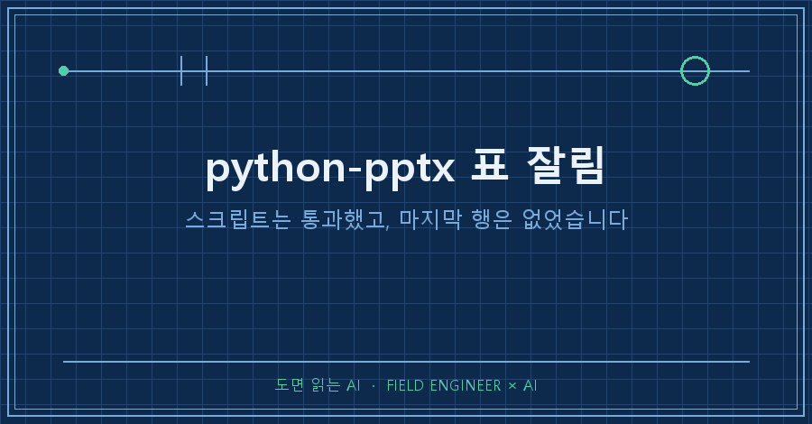
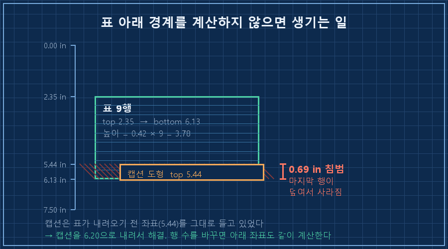
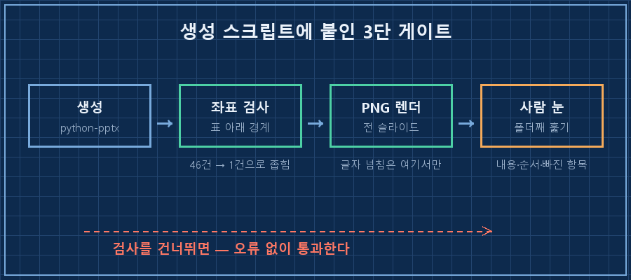

아홉 줄짜리 표에서 마지막 한 줄이 안 보였습니다. 스크립트는 경고 하나 없이 끝났고요.
python-pptx 표 잘림은 대개 표가 잘린 게 아닙니다. 표는 아홉 줄 다 그려져 있는데, 아래쪽에 있던 다른 도형이 표 영역까지 올라와서 마지막 행을 덮은 거예요. python-pptx는 도형이 서로 겹치는지를 아예 보지 않습니다. 그래서 오류도 경고도 안 납니다.
결론부터 쓰면 이렇습니다. 표를 넣은 슬라이드는 "표의 아래 경계 좌표"를 직접 계산해서, 그 아래 도형들과 부딪치는지 검사하세요. 그리고 마지막엔 PNG로 뽑아서 눈으로 보세요. 이 두 개가 제가 그날 얻은 전부입니다.
2026년 9월 기준이고, 확인 환경은 Python 3.12.10에 python-pptx 1.0.2입니다. PNG 렌더 부분만 Windows와 PowerPoint가 필요하고, 나머지 검사 코드는 운영체제를 안 가려요.
도면 그리는 일을 오래 했습니다. 15년쯤 됐는데, 그 바닥에서 배운 순서가 하나 있어요. 다 그린 다음에 출력해서 눈으로 대조하는 겁니다. 화면에서 멀쩡한 게 종이에선 겹쳐 있는 일이 흔하거든요. 이번엔 그 습관이 슬라이드에서 값을 했습니다.
1. 문장 한 줄 넣었더니 표가 통째로 내려갔어요
제가 쓰는 슬라이드 생성 스크립트에는 표 위에 설명 문단을 넣는 옵션이 있습니다. 이걸 켜면 표 시작 위치가 자동으로 내려가요. 코드는 이렇게 생겼습니다.
if intro: # 표 위 설명 문단을 넣으면
if top is None:
top = 2.35 # 표 시작 위치를 아래로 밀어냄
top = Inches(top if top is not None else 1.55)
height = Inches(height if height is not None else min(5.0, 0.42 * n_rows))여기까지는 의도한 동작입니다. 문제는 표 아래에 있던 캡션이었어요. 그 캡션은 설명 문단이 없던 시절의 좌표(5.44인치)를 그대로 들고 있었습니다.
계산해 보면 바로 보입니다. 행이 아홉 줄이니 높이는 0.42 × 9 = 3.78인치. 시작이 2.35인치니까 표의 아래 끝은 6.13인치예요. 캡션은 5.44인치에서 시작하고요. 0.69인치가 겹칩니다. 행 하나 높이가 0.42인치니까, 마지막 행은 통째로 캡션 상자 밑에 깔린 셈이었어요.
실제로 파일을 열어 좌표를 찍어보면 이렇게 나옵니다.
[슬라이드] 10.83 x 7.50 in
표 9행 top=2.35 bottom=6.13
[!] 표 아래쪽을 침범: 도형 top=5.44 (표 bottom=6.13) → 0.69 in 겹침
2. 왜 스크립트는 멀쩡히 통과했을까요
python-pptx가 하는 일은 "이 좌표에 이만한 상자를 놓아라"를 파일에 적는 것까지입니다. 놓고 나서 서로 부딪치는지, 화면 밖으로 나갔는지는 보지 않아요. 브라우저처럼 배치를 계산해주는 물건이 아니라, 도면에 좌표를 받아 적는 물건에 가깝습니다.
그래서 이런 실수는 에러가 아니라 그림으로만 드러납니다. 저는 AI한테 슬라이드 구성을 통째로 맡기고 스크립트를 받아 쓰는데, AI도 이 좌표를 계산해주진 않았어요. 표 행 수를 늘리라고 했더니 행만 늘려줬고, 그 아래 캡션 좌표는 손대지 않았습니다. 사람이 시킨 일만 정확히 한 거죠.
여기서 배운 규칙은 한 줄입니다. 표 행 수를 바꿨으면 그 아래 도형의 좌표도 같이 계산한다.
3. 겹침 검사를 짰다가 오탐 46건을 봤습니다
처음엔 욕심을 냈어요. 슬라이드의 모든 도형 쌍을 돌면서 겹치는 걸 다 찾아내게 짰습니다. 결과가 이랬습니다.
[슬라이드] 10.83 x 7.50 in
S1 겹침 PICTURE (3.05~7.46) x 글상자 (3.95~5.35)
S4 겹침 AUTO_SHAPE (1.46~5.38) x 글상자 (2.58~2.92)
S4 겹침 AUTO_SHAPE (1.46~5.38) x 글상자 (3.34~3.74)
... (같은 유형 반복)
[결과] 의심 46건46건 전부 오탐이었습니다. 템플릿 배경 위에 얹힌 제목, 색 박스 안에 들어앉은 글자, 로고 위 장식 — 전부 의도한 겹침이거든요. 이런 목록을 매번 받으면 사람은 사흘이면 안 봅니다. 저도 예전에 똑같은 식으로 알림 하나를 죽여봤어요. 여러분도 알림 창을 그냥 닫아버린 적 있으시죠?
그래서 검사 범위를 좁혔습니다. 조건 네 개로요.
1. 대상은 표만
2. 표와 가로로 만나는 도형만 (좌우로 비켜 있으면 무관)
3. 표의 위쪽 끝보다 아래에서 시작하는 도형만 (표 위 제목은 제외)
4. 슬라이드 절반 이상을 덮는 배경류는 제외
핵심은 이 조건입니다.
if t_top < o_top < t_bot: # 표 안쪽에서 시작하는 도형 = 침범
print("[!] 표 아래쪽을 침범: 도형 top=%.2f (표 bottom=%.2f)"
% (o_top, t_bot))좁히고 나니 숫자가 이렇게 바뀌었어요.
고친 파일 → 표 침범 0건
캡션을 5.44로 되돌린 파일 → 표 침범 1건 (0.69 in)같은 파일, 같은 코드인데 46건이 1건이 됐습니다. 잡아야 할 1건만 남기는 게 검사 설계의 전부더라고요.
4. 그래도 마지막은 PNG 눈검증입니다
좌표 검사로 잡히는 건 "상자끼리 겹침"까지예요. 글자가 상자 밖으로 흘러넘치는 것, 자동 줄바꿈으로 표가 계산보다 더 커지는 것은 파일 안 좌표만 봐선 안 보입니다. 그래서 전 슬라이드를 그림으로 뽑아둡니다.
import win32com.client
app = win32com.client.Dispatch("PowerPoint.Application")
pres = app.Presentations.Open(pptx_path, ReadOnly=True, WithWindow=False)
h = int(1280 * pres.PageSetup.SlideHeight / pres.PageSetup.SlideWidth)
pres.Export(out_dir, "PNG", 1280, h) # 전 슬라이드 PNG로
pres.Close(); app.Quit()확인 방법은 간단합니다. 스크립트를 돌린 뒤 지정한 폴더에 슬라이드1.PNG부터 장수만큼 파일이 생겼는지 보고, 그 폴더를 큰 아이콘으로 열어 한 번에 훑으면 됩니다. 저는 8장이 나왔고, 그중 한 장에서 사라진 행을 찾았어요. 스크립트는 그날 끝까지 오류가 없었습니다.
| 단계 | 잡는 것 | 못 잡는 것 |
|---|---|---|
| 좌표 계산 (표 아래 경계) | 표 침범, 화면 밖 | 글자 넘침, 색 대비 |
| PNG 렌더 | 실제로 보이는 모든 것 | 내용이 맞는지 |
| 사람 눈 | 내용·순서·빠진 항목 | — |

이건 먼저 물어보실 것 같네요
Q. LibreOffice로도 PNG를 뽑을 수 있지 않나요?
soffice --convert-to로 변환하는 방법이 알려져 있는데, 저는 PowerPoint COM 방식만 써봤습니다. 안 써본 건 안 써봤다고 적어둘게요. 다만 렌더러가 다르면 글꼴 대체나 줄바꿈이 달라질 수 있어서, 발표할 프로그램으로 렌더하는 편이 안전하다고 생각합니다.
Q. 표 높이를 지정하면 그만큼만 차지하나요?
아니요. 파워포인트에서 표 높이는 최소값처럼 동작해서, 셀 안 글자가 길면 그 이상으로 늘어납니다. 그래서 계산값이 실제보다 작게 나올 수 있어요. 검사에서 0건이 나와도 눈검증을 남겨두는 이유가 이겁니다.
Q. 이런 건 AI한테 "겹치지 않게 해줘"라고 하면 안 되나요?
시켜봤는데 좌표를 직접 계산해 넣는 것까지는 잘합니다. 문제는 바꾼 뒤에 확인을 못 한다는 거예요. AI는 자기가 만든 파일이 화면에 어떻게 보이는지 볼 수단이 없거든요. 그래서 저는 생성 스크립트 마지막 줄에 렌더 명령을 아예 붙여놨습니다. 만들면 무조건 그림이 같이 나오게요.
python-pptx 표 잘림으로 검색해서 여기까지 오셨다면, 파일을 열기 전에 좌표부터 한 번 찍어보세요. 이번 건도 결국 계산 실수 한 줄이었는데, 그게 오류 없이 통과하는 종류여서 오래 안 보였습니다. 표 행 수를 바꿀 때마다 아래 좌표를 같이 건드린다 — 지금은 스크립트 맨 위 주석에 이 문장이 적혀 있어요.
다음 편에는 같은 날 걸린 다른 함정을 쓰려고 합니다. 화면을 캡처해서 잘라 넣었더니, 원본에 붙어 있던 "샘플" 표시가 잘려 나가서 진짜 데이터처럼 보인 건이에요.
이렇게 오류 없이 틀리는 사례들은 makefield.ai에 따로 묶어 정리해 두고 있습니다.
태그: #pythonpptx표잘림 #pythonpptx #파이썬PPT자동생성 #PPT자동화 #python으로PPT만들기 #pptx도형겹침 #PPT표잘림 #파워포인트파이썬 #AI가만든PPT #AI문서검증 #AI산출물검수 #AI자동화구축 #파이썬자동화 #발표자료자동생성 #도면읽는AI